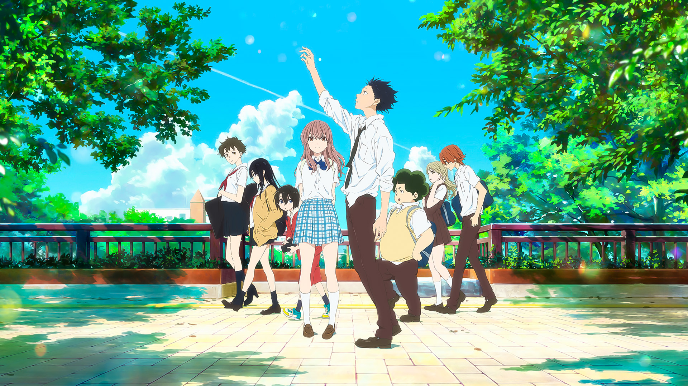
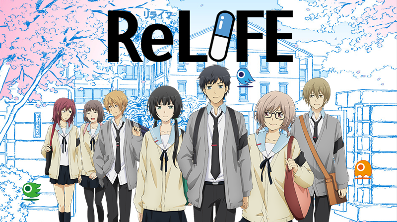

Slice of life anime:
A Silent Voice (2016)

ReLIFE (2016)

Genre: Slice of Life, Tragedy, Romance
A Silent Voice, produced by Kyoto animations, recieves a 10/10 rating. Though the movie has
many characters, some we hate, others we love, the story centers around Ishida Shouya and
Nishimiya Shouko. Nishimiya Shouko is a deaf elementary student who found herself being
bullied by her classmates: mainly Ishida Shouya. Despite Nishimiya getting bullied by
everyone, she goes out of her way to always put on a smile and tries to befriend everyone
despite communication barriers: especially Ishida Shouya. When Nishimiya Shouko's parents
get in contact with teachers, the bullying is addressed. This is where the tables turn. Despite
everyone in the classroom bullying Nishimiya Shouko, everyone puts the blame on Ishida
Shouya. Ishida Shouya was beyond shocked to discover that the people whom he thought
were his friends, had suddenly turned on him, instead of them all taking the blame for
bullying Nishimiya Shouko. From that point forward Ishida Shouya was bullied by everyone
else except Nishimiya Shouko. But, Ishida Shouya continued to bully Nishimiya Shouko:
blaming her as the reason as to why he is now getting bullied by everyone. But one day
Nishimiya Shouko moved away without saying a word to anyone. By the time Ishida Shouya
is in high school he was no longer being bullied, but he was depressed, isolated from others,
and had social anxiety. One day in high school he notices that Nishimiya Shouko is
attending the same high school as him. Ishida Shouya sought to redeem himself in various
ways. This movie is a visual representation of the roller coaster we call, "coming of age". My
description does this movie no justice: it is a must watch!!!
Genre: Slice of Life, Sci-Fi, Comedy, Drama, Romance
9/10 rating. The story follows Kaizaki Arata, a 27-year-old jobless man, who fails at every job
interview he had after quitting his last company. His life changes after he met Yoake Ryou of
the ReLife Research Institute, who offered him a drug that can change his appearance to 17-
years-old and to become a subject in an experiment for one year. Thus, he begins his life as a
high school student once more.